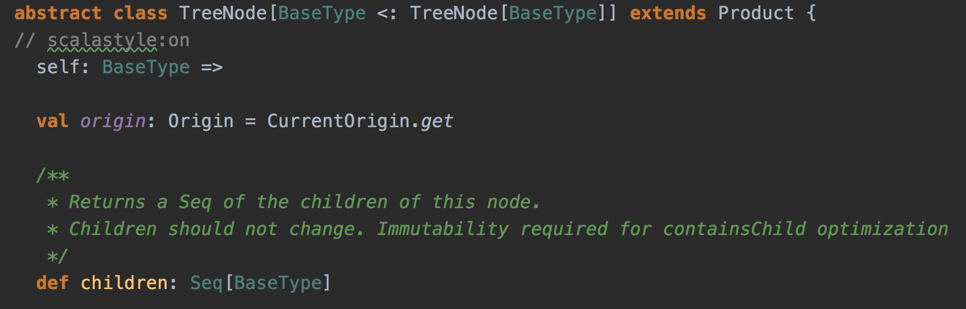
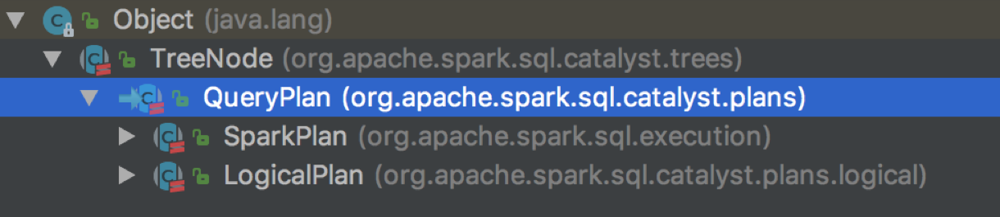
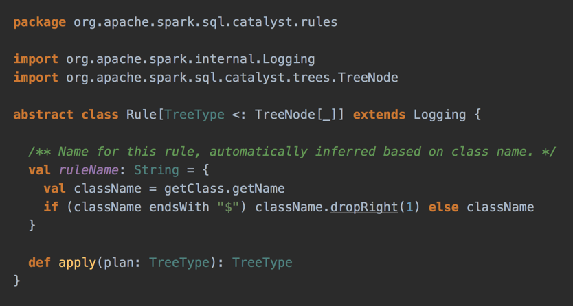
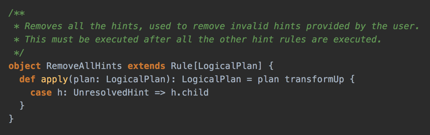
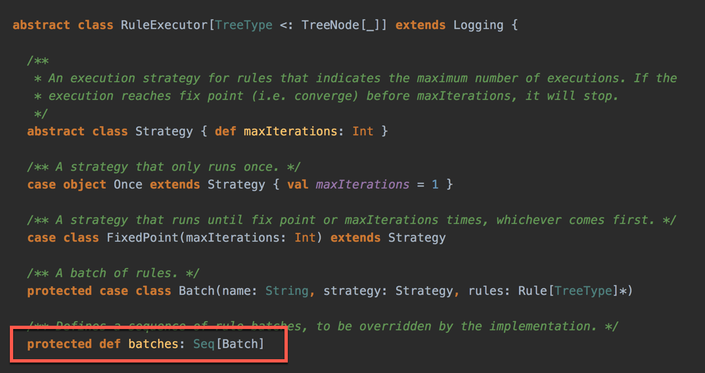
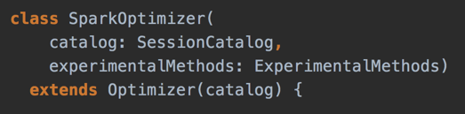
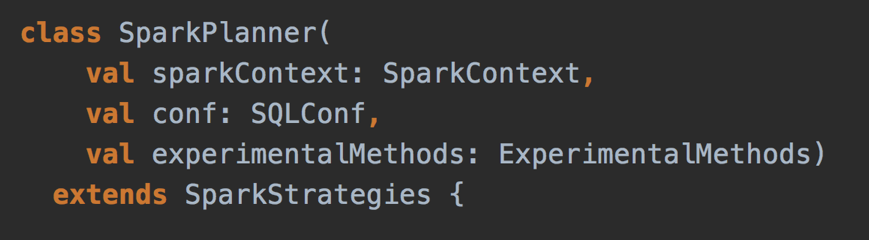
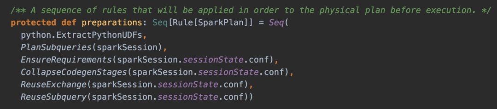
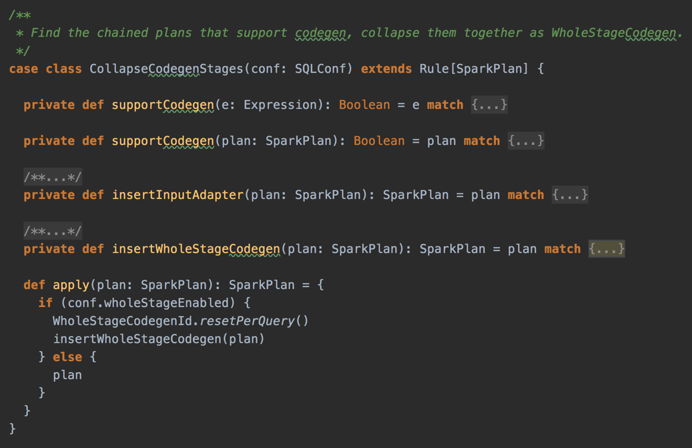

The Internals of
Structured Query Execution
Apache Spark 2.4.4 / Spark SQL
@jaceklaskowski / StackOverflow / GitHub
The "Internals" Books: Apache Spark / Spark SQL / Spark Structured Streaming
Structured Queries
- Structured query is a query over data that is described by a schema
- In other words, data has a structure
- Schema is a tuple of three elements:
- Name
- Type
- Nullability
- Remember SQL? It's a Structured Query Language
Examples of Structured Queries
// Dataset API for Scala
spark.table("t1")
.join(spark.table("t2"), "id")
.where($"id" % 2 === 0)
// SQL
sql("""SELECT t1.* FROM t1
INNER JOIN t2 ON t1.id = t2.id
WHERE t1.id % 2 = 0""")
Why is Structure important?
- Storage
- The less space to store large data sets the better
- Tungsten project (More in the following slides)
Query Languages in Spark SQL
- High-level declarative query languages:
- Good ol' SQL
- Untyped row-based DataFrame
- Typed Dataset
- Another "axis" are programming languages
- Scala, Java, Python, R
SQL
- Structured Query Language
- SQL 92
- Hive QL
- ANTLR grammar (from Presto)
DataFrames (and Schema)
- DataFrame — a collection of rows with a schema
- Row and RowEncoder
- DataFrame = Dataset[Row]
- Type alias in Scala
- Switch to The Internals of Spark SQL
Datasets (and Encoders)
- Dataset - strongly-typed API for working with structured data in Scala
- Encoder - Serialization and deserialization API
- Converts a JVM object of type T to and from an InternalRow
- ExpressionEncoder is the one and only implementation
- Switch to The Internals of Spark SQL
Project Catalyst
- Catalyst — Tree Manipulation Framework
- TreeNode with child nodes
- Children are TreeNodes again
- Recursive data structure
- Rules to manipulate TreeNodes
- Rules executed sequentially
- Loops supported
TreeNode
- TreeNode is a node with child nodes (children)
- Recursive data structure
- Builds a tree of TreeNodes

What a nice class definition in Scala, isn't it?TreeNodes

Query Plans
- QueryPlan — the base node for relational operators
- LogicalPlan — the base logical query plan
- SparkPlan — the base physical query plan
- Switch to The Internals of Spark SQL
Example of TreeNode (SparkPlan)

Example of TreeNode (explain output)

Catalyst Expressions
- Expression — an executable node (in a Catalyst tree)
- Evaluates to a JVM object given InternalRow
def eval(input: InternalRow = null): Any
Rule

Example: RemoveAllHints Logical Rule

RuleExecutor

Query Execution
- QueryExecution - the heart of any structured query
- Structured Query Execution Pipeline
- Execution Phases
- Use Dataset.explain to know the plans
- Use Dataset.queryExecution to access the phases
- QueryExecution.toRdd to generate a RDD (more later)
QueryExecution Pipeline

Spark Analyzer

- Spark Analyzer - Validates logical query plans and expressions
- RuleExecutor of LogicalPlans
- Once a structured query has passed Spark Analyzer the query will be executed
- Allows for registering new rules
Catalyst (Base) Optimizer

- Catalyst Query Optimizer
- Base of query optimizers
- Optimizes logical plans and expressions
- Predefined batches of rules
- Cost-Based Optimization
- Allows for extendedOperatorOptimizationRules
- Switch to The Internals of Spark SQL
Spark Logical Optimizer
- Spark Logical Optimizer
- Custom Catalyst query optimizer
- Adds new optimization rules
- Defines extension points
- preOptimizationBatches
- postHocOptimizationBatches
- ExperimentalMethods.extraOptimizations
Spark Planner
- Spark Planner
- Plans optimized logical plans to physical plans
- At least one physical plan for any given logical plan
- Exactly one in Spark 2.3
- Defines extension point
- ExperimentalMethods.extraStrategies
Spark Physical Optimizer (Preparations)
- Physical query optimizations (aka preparations rules)
- Whole-Stage Code Generation
- Reuse Exchanges and Subqueries
- EnsureRequirements (with Bucketing)
- Note the type Rule[SparkPlan]
- Rules take a SparkPlan and produce a SparkPlan
SparkSessionExtensions
- Hooks and Extension Points
- Customize a SparkSession with user-defined extensions
- Custom query execution rules
- Custom relational entity parser
- injectCheckRule
- injectOptimizerRule
- injectParser
- injectPlannerStrategy
- injectPostHocResolutionRule
- injectResolutionRule
- Use Builder.withExtensions or spark.sql.extensions
SparkSessionExtensions Example
import org.apache.spark.sql.SparkSession
val spark = SparkSession
.builder
.withExtensions { extensions =>
extensions.injectResolutionRule { session =>
...
}
extensions.injectOptimizerRule { session =>
...
}
}
.getOrCreate
Spark Core's RDD
- Anything executable on Spark has to be a RDD
- ...or simply a job (of stages)
- RDD describes a distributed computation
- RDDs live in SparkContext on the driver
- RDD is composed of partitions and compute method
- Partitions are parts of your data
- compute method is the code you wrote
- Partitions become tasks at runtime
- Task is your code executed on a part of data
- Tasks are executed on executors
(No) RDD at runtime

RDD Lineage
- RDD Lineage shows RDD with dependencies
- RDD lineage is a graph of computation steps
- RDD.toDebugString
QueryExecution Pipeline...Again
Structured Queries and RDDs
- QueryExecution.toRdd - the very last phase in a query execution
- Spark SQL generates an RDD to execute a structured query
- Spark SQL uses higher-level structured queries to express RDD-based distributed computations
- RDD API is like assembler (or JVM bytecode)
- Dataset API is like Scala or Python
Debugging Query Execution
- debug Scala package object with debug and debugCodegen
import org.apache.spark.sql.execution.debug._ val q = spark.range(10).where('id === 4) q.debug val q = sql("SELECT * FROM RANGE(10) WHERE id = 4") q.debugCodegen - Switch to The Internals of Spark SQL
Whole-Stage Java Code Generation
- Whole-Stage CodeGen physical query optimization
- Collapses a query plan tree into a single optimized function
- Applied to structured queries through CollapseCodegenStages physical optimization
- spark.sql.codegen.wholeStage internal property
- Switch to The Internals of Spark SQL
Whole-Stage Code Gen in Web UI
CollapseCodegenStages Optimization Rule

Tungsten Execution Backend
- Tungsten Execution Backend (aka Project Tungsten)
- Optimizing Spark jobs for CPU and memory efficiency
- It is assumed that network and disk I/O are not performance bottlenecks
- InternalRow data abstraction
- UnsafeRow
- Backed by raw memory
- Uses sun.misc.Unsafe
- Switch to The Internals of Spark SQL